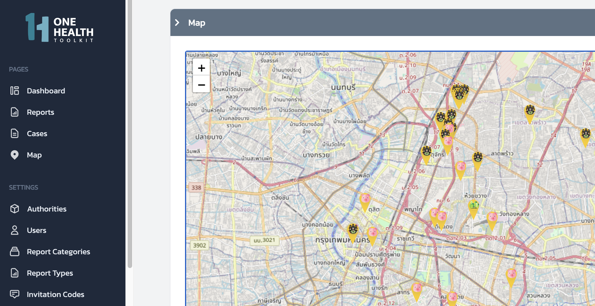

OHTK MS
The OHTK Management System allows local authorities to track incoming reports, manage cases, and respond to outbreaks.

Setting up OHTK-MS
What you'll need
- Node.js version 16.14 or above:
- When installing Node.js, you are recommended to check all checkboxes related to dependencies.
- NextJS
- React
- React-DOM
npm install next react react-dom
Install
Get latest version of ohtk-ms from github:
git clone https://github.com/onehealthtoolkit/ohtk-ms.git
cd ohtk-ms
Start Localhost Server
npm run dev
Navigate to your local host port 3000:
Create Required OHTK Data
You need to create some records in order to use the mobile app – Authorities, Report Categories, Report Types, etc
Using OHTK-MS
Overview
OHTK-MS is deployed by local authorities in order to track incoming reports from their community volunteers, manage high risk cases, and respond to potential outbreaks. The authority managing OHTK-MS is responsible for configuring the system according to their local or community needs. There are several components to OHTK-MS that an authority may customize to best fit their jurisdiction.
Governance Hierarchy
First, the authority must create a Governance Hierarchy, which determines who can see what data depending on a particular user’s province, state, or other country-specific regional grouping. This Governance Hierarchy will operate according to the area boundaries defined by the authority managing the system. In other words, OHTK-MS users will be able to create and view reports only in the areas they have access to. Depending on the configuration of the Governance Hierarchy, some users may be able to see multiple or even all areas if the authority is a regional agency.
Report Types
Next, the authority must create their Report Categories and Report Templates. The Report Categories determine which health threat OHTK-MS will be configured for. For example, if your authority is interested in a traditional One Health Approach, then you would enable Report Categories for animal, human, and environmental threats. Creating Report Templates allows you to create reusable customized forms for specific health threats that your authority or community are interested in. These Report Templates can be configured to collect structured and unstructured data according to the type of report and the state of the case (such as when a Case is escalated to an Outbreak). For example, if your authority is conducting larvae counting for dengue fever surveillance, you would create a Report Template that allows users to upload photos of mosquito larvae living in various homes in the community and submit the reports to OHTK-MS.
Dashboards and Reporting
The One Health Risk Management Dashboard displays a real-time view of new and on-going Reports, Cases, and Outbreaks. Users can drill-down into specific Reports, collaborate with other users on Cases, view and export data for further analysis. The Dashboard also provides a real-time map of health events according to a user’s authority. The data displayed in the Dashboard depends on the Governance Hierarchy of the user and their permission to interact with the Dashboard depends on their user’s Role.
For example, a Department of Livestock official who might be interested in Avian Influenza, can monitor incoming reports for suspicious illness in chicken, and keep track of on-going investigations for preliminary Cases of the bird flu. While OHTK-MS will automatically escalate Reports to Cases if they meet predefined Case Definitions, the official may judge a Report to be suspicious enough to warrant manually escalating to Case. Likewise, if the investigation confirms an Avian Influenza infection, then the official might escalate the Case to an Outbreak status and OHTK-MS will automatically trigger notifications to the local agencies responsible for animal outbreaks.